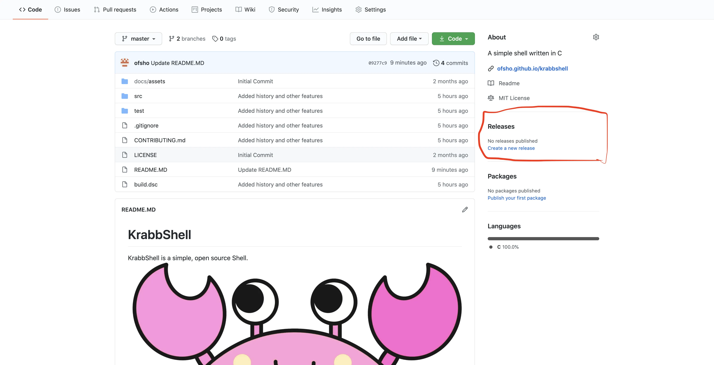

Getting Started
Installation
To install Krabb you will need to go to the Repository and go to the Releases section:
and install the latest version (the highest one) and click on your os installation.
KrabbShell is not available for Windows!
If you are on MacOS run these commands (you must be in the downloads directory):
chmod +x krabb
mv ./krabb /usr/local/bin/krabbHello World in Krabb
If you want to run krabb you would need to use the krabb command in the terminal when you run the command it will run the shell.
krabbThen you can run the krabb shell which will run if you would use the krabb command and you will see this prompt:
➜ ~ krabb
{} -> if this isn't your output, you probably have an error. To get help make an issue or find your error message in the error list.
To print Hello World (usually the simplest program) you would need to open your terminal and run the krabb command (running the krabb command it runs the shell) and run these commands:
echo "Hello, world!"This will print "Hello, world!" like this:
{} -> echo "Hello, world!"
"Hello, world!"
{} -> if this isn't your output, you probably have an error. To get help make an issue or find your error message in the error list.
To show output in krabb you would need to use the echo command which prints output and everything after the echo command will be printed. For example lets print Hi, This is Krabb Shell.
The code for that looks like this:
{} -> echo Hi, This is Krabb Shell
Hi, This is Krabb Shell
{} -> if this isn't your output, you probably have an error. To get help make an issue or find your error message in the error list.
Note
Git
If you have a .git folder in your directory the
{} ->part of the shell will change to
{ git } ->The white block in the code
The white block in the code
{} -> <- thisthis is the cursor in the terminal.